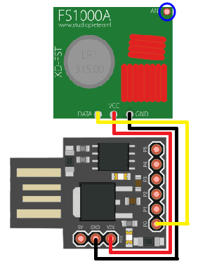

Author: @br0sck
⣆⠈⠳⣄⡀⠀⠀⠀⠀⠀⠀⠀⠀⠀⠀⠀⠀⠀⠀⠀⠀⠀⠀⠀⠀⠀⠀⠀⠀⠀⠀⠀⠀⠀⠀⠀⠀⠀⠀⠀⠀⠀⠀⠀⠀⠀⠀⠀⠀⠀⠀⠀⠀⠀⠀⠀⠀⠀⠀⠀⠀⡠⠴⠒⢲
⠘⢦⡀⠀⠙⠲⣄⡀⠀⠀⠀⠀⠀⠀⠀⠀⠀⠀⠀⠀⠀⠀⠀⠀⠀⠀⠀⠀⠀⠀⠀⠀⠀⠀⠀⠀⠀⠀⠀⠀⠀⠀⠀⠀⠀⠀⠀⠀⠀⠀⠀⠀⠀⠀⠀⠀⠀⢀⡤⠖⠉⠀⢀⡴⠋
⠀⢻⣍⠲⢄⡐⠤⣉⠓⠦⣄⠀⠀⠀⠀⠀⠀⠀⠀⠀⠀⠀⠀⠀⠀⠀⠀⠀⠀⠀⠀⠀⠀⠀⠀⠀⠀⠀⠀⠀⠀⠀⠀⠀⠀⠀⠀⠀⠀⠀⠀⠀⠀⢀⣠⠴⠚⣁⠀⠀⣀⡴⠟⣪⠇
⠠⡤⠽⢦⣀⠈⠑⠢⢍⣒⠤⣉⡒⠤⣀⠀⠀⠀⠀⠀⠀⠀⠀⠀⠀⠀⠀⠀⠀⠀⠀⠀⠀⠀⠀⠀⠀⠀⠀⠀⠀⠀⠀⠀⠀⠀⠀⠀⠀⢀⣠⠴⠚⣉⠤⢒⣩⠴⠒⠉⢁⡠⣚⢥⠀
⠀⠙⢶⡀⠈⠙⠒⠤⣐⡪⠭⣒⡘⢍⡁⢍⣒⠢⢄⣀⠀⠀⠀⠀⠀⠀⠀⠀⠀⠀⠀⠀⠀⠀⠀⠀⠀⠀⠀⠀⠀⠀⠀⠀⠀⣀⣤⣖⠪⠭⠈⣉⠽⣐⠮⢕⣊⡤⠤⠒⠋⢉⡤⠊⠀
⠀⠀⠰⡛⠓⠢⢤⣀⡀⠬⢝⣒⡪⢏⡈⠝⣒⡨⣿⢿⡑⢦⠀⠀⠀⠀⠀⠀⠀⠀⠀⠀⠀⠀⠀⠀⠀⠀⠀⠀⠀⠀⠀⣴⠏⡰⢅⣖⡲⠾⠍⣩⢯⣒⣋⠥⢤⣒⠠⠤⠐⢛⡶⠂⠀
⠀⠀⠀⠈⣒⠤⢄⣀⡈⠍⣒⡒⠠⠵⣏⠙⠒⢺⣅⢿⡍⠀⣇⠀⠀⠀⠀keep learning ⠀⠀⠀⢰⡏⠀⣹⢥⡗⠶⠌⣉⠯⠔⣒⣊⠩⠁⠀⣀⣠⣖⣏⠀⠀⠀
⠀⠀⠀⠀⠑⢤⡀⠀⠈⠉⠒⠒⠫⠭⢼⣛⠒⠒⡧⣽⣏⡀⢸⡀⠀⠀⠀keep hacking!⠀⠀⠀ ⣸⠁⣈⣷⡲⡏⠉⣙⡯⠭⠥⠒⠒⠊⠉⠉⠀⢀⡴⠃⠀⠀⠀
⠀⠀⠀⠀⠀⠠⡌⠙⠒⠊⠬⠭⠥⠤⠰⣞⡉⠉⣟⡵⣯⣠⠀⠑⢤⡀⠀⠀⠀⠀⠀⠀⠀⠀⠀⠀⠀⠀⠀⢀⡤⠚⡁⢠⡾⣟⣍⡎⠭⢖⣏⣉⡥⠤⠤⠤⠤⠴⠭⡅⠀⠀⠀⠀⠀
⠀⠀⠀⠀⠀⠀⠙⠲⠤⢀⡀⠀⠀⠀⠴⠦⢍⡉⢿⡜⡽⢸⢾⣦⣤⠉⡕⢲⣒⡆⠀⠀⠀⠀⠀⠀⡖⣺⠻⣏⣰⣄⣿⣟⡼⡿⣾⣞⣉⠿⠭⢐⣀⣀⣀⣀⣤⡴⠚⠁⠀⠀⠀⠀⠀
⠀⠀⠀⠀⠀⠀⠀⠰⢏⣉⠉⠀⣀⣠⢴⠖⠽⡴⣞⢿⣇⣎⠋⡇⢫⢻⡱⣞⣿⡤⡄⠀⠀⠀⠀⡼⣽⣟⡟⢿⢛⣎⡏⣾⢮⣟⣽⡷⡛⠧⢖⣒⣂⢀⣀⣀⠴⠃⠀⠀⠀⠀⠀⠀⠀
⠀⠀⠀⠀⠀⠀⠀⠀⠀⠀⠉⠀⢀⠖⠁⡴⢋⡤⡳⢻⢀⢿⢹⢹⢞⢳⢏⣯⣹⠳⡷⡀⠀⢀⣜⡗⣏⣹⡏⢻⣯⣻⢹⢱⣟⢼⢻⣳⡌⠑⠄⠑⣄⠀⠀⠀⠀⠀⠀⠀⠀⠀⠀⠀⠀
⠀⠀⠀⠀⠀⠀⠀⠀⠀⠀⠀⠀⠸⣀⠤⢒⣟⠜⢁⡎⡝⡸⡶⢻⢳⢯⣢⠻⡝⡌⢮⠿⠀⢸⣪⡎⡰⣫⢷⣻⢳⢻⠒⡿⡝⡍⣆⠱⠜⣶⠤⠄⡸⠀⠀⠀⠀⠀⠀⠀⠀⠀⠀⠀⠀
⠀⠀⠀⠀⠀⠀⠀⠀⠀⠀⠀⠀⠀⠀⠀⢸⣊⠴⠻⠜⢠⡇⠃⢸⡸⠀⣧⠃⢸⢆⡼⠀⠀⠀⠘⠦⢞⡇⢪⠇⠘⣸⠀⡗⣧⢳⢸⠙⠦⠼⠆⠀⠀⠀⠀⠀⠀⠀⠀⠀⠀⠀⠀⠀⠀
⠀⠀⠀⠀⠀⠀⠀⠀⠀⠀⠀⠀⠀⠀⠀⠀⠀⠀⢫⣠⠋⡇⢠⠎⢧⢂⡜⠢⠎⠀⠀⠀⠀⠀⠀⠀⠈⠧⠾⡄⣠⠋⢧⣠⠎⠣⡼⠀⠀⠀⠀⠀⠀⠀⠀⠀⠀⠀⠀⠀⠀⠀⠀⠀⠀
⠀⠀⠀⠀⠀⠀⠀⠀⠀⠀⠀⠀⠀⠀⠀⠀⠀⠀⠈⠁⠀⠙⠉⠀⠈⠉⠀⠀⠀⠀⠀⠀⠀⠀⠀⠀⠀⠀⠀⠈⠁⠀⠀⠀⠀⠀⠀⠀⠀⠀⠀⠀⠀⠀⠀⠀⠀⠀⠀⠀⠀⠀⠀⠀⠀
╔══════════════[Summary]══════════════╗
║ ║
║ 1. Introduction ║
║ 2. Capabilities ║
║ 3. Materials ║
║ 4. Hands On! ║
║ 4.1 Circuit ║
║ 4.2 Code ║
║ 4.3 Time to Play! ║
║ 5. Conclusion ║
║ ║
╚═════════════════════════════════════╝
Introduction
Without a doubt, the field of hardware hacking has always been fertile ground for the most curious — whether enthusiasts seeking experimentation or tech professionals who want to go beyond the abstract layers of software. Ever thought of building your own device with the explicit goal of exploring, manipulating, or even interfering with systems? Well then — intriguing, isn't it?
In this paper, we’ll explore the construction of a 443 MHz jammer on a budget of less than R$50, proving that with a small investment, it’s possible to obtain a functional and effective device. The goal is not only to present an affordable project but also to demystify part of the hardware hacking universe, making it more approachable for both beginners and those with some experience in the field.
To follow along with this material, it’s expected that the reader has a basic familiarity with the Arduino ecosystem — even if superficial, like what’s learned in introductory engineering courses. Some parts will require prior knowledge to ensure a complete understanding of the proposed development.
Note: do not use this information to harm others in any way — this paper is for educational purposes only. Everyone is responsible for their own actions.
Shall we continue??
Capabilities
A 443 MHz jammer may seem simple at first, but it has its capabilities. Even though it's small, it can block:
* Remote controls for automatic gates
* Car keys and alarms
* IoT devices (Internet of Things)
* Home alarm systems
These are just a few examples.
Materials
Before we actually get started, we’ll need the following materials:
* Digispark Attiny85 ($5):
Being a compact, low-cost board with USB input, it's ideal for easy connection and storing the code.
* FS1000A Transmitter Module (R$2):
This will handle the main task — jamming the signal :).
* 2DBI Helical Antenna (R$1):
Required for the FS1000A module to operate at 433 MHz; otherwise, it will default to 315 MHz.
Note: If the average price is incorrect, please ignore it, as we are Brazilian and do not know exactly how much each item costs in America.
Shall we get to work?!
Let's Get to Work!
Circuit

The FS1000A module has 3 pins, which are DATA, VCC, and GND, meaning:
* DATA: Data output. Since it's a transmitter, it only sends data (output).
* VCC: Power supply input, operating at 3.3V to 5V.
* GND: Zero volt reference point (not exactly the same as negative, but can be understood as the negative/neutral pole).
VCC of the FS1000A should be connected to VIN on the Digispark Attiny85.
GND of the FS1000A should be connected to GND on the Digispark Attiny85.
DATA of the FS1000A should be connected to P0 on the Digispark Attiny85 (where it will output the data).
Important detail: the area circled in blue is where you must solder the 2DBI helical antenna. This step is mandatory — otherwise, the jammer will operate at 315 MHz.
Code
╔═════════════════════════════════════════════════════════════════════════════════╗
║ #define FS1000A_PIN 0 ║
║ ║
║ void setup() { ║
║ pinMode(FS1000A_PIN, OUTPUT); ║
║ digitalWrite(FS1000A_PIN, LOW); ║
║ } ║
║ ║
║ void loop() { ║
║ for (int sequence = 1; sequence < 50; sequence++) { ║
║ for(int duration = 1; duration <= 3; duration++) { ║
║ digitalWrite(FS1000A_PIN, HIGH); ║
║ for (int widthsize = 1; widthsize <= (1 + sequence); widthsize++) { ║
║ delayMicroseconds(50); ║
║ } ║
║ digitalWrite(FS1000A_PIN, LOW); ║
║ for (int widthsize = 1; widthsize <= (1 + sequence); widthsize++) { ║
║ delayMicroseconds(50); ║
║ } ║
║ } ║
║ } ║
║ } ║
╚═════════════════════════════════════════════════════════════════════════════════╝
╔═══════════════════════╗
║ #define FS1000A_PIN 0 ║
╚═══════════════════════╝
Defines pin 0 on the Digispark as the output for the FS1000A RF transmitter module.
╔═════════════════════════════════════╗
║ void setup() { ║
║ pinMode(FS1000A_PIN, OUTPUT); ║
║ digitalWrite(FS1000A_PIN, LOW); ║
║ } ║
╚═════════════════════════════════════╝
Configures the pin as an output and ensures it starts in a LOW state (no transmission).
╔═════════════════════════════════════════════════════════╗
║ void loop() { ║
║ for (int sequence = 1; sequence < 50; sequence++) { ║
╚═════════════════════════════════════════════════════════╝
Starts a loop of 49 iterations, where the value of sequence increases from 1 to 49. This modifies the "length" of the pulses being emitted.
╔════════════════════════════════════════════════════╗
║ for(int duration = 1; duration <= 3; duration++) { ║
╚════════════════════════════════════════════════════╝
Repeats 3 times for each sequence value. This generates 3 similar pulses for each sequence configuration.
╔═════════════════════════════════════════════════════════════════════╗
║ digitalWrite(FS1000A_PIN, HIGH); ║
║ for (int widthsize = 1; widthsize <= (1 + sequence); widthsize++) { ║
║ delayMicroseconds(50); ║
║ } ║
╚═════════════════════════════════════════════════════════════════════╝
Turns the transmitter ON for a time proportional to sequence × 50µs. During this time, it emits pulses.
╔═════════════════════════════════════════════════════════════════════╗
║ digitalWrite(FS1000A_PIN, LOW); ║
║ for (int widthsize = 1; widthsize <= (1 + sequence); widthsize++) { ║
║ delayMicroseconds(50); ║
║ } ║
╚═════════════════════════════════════════════════════════════════════╝
Turns the transmitter OFF and pauses for a time, creating a symmetrical wave.
In summary, the code sends radio signals by quickly turning pin 0 on and off. These pulses gradually increase in duration — meaning it starts by sending very short bursts and, with each repetition, makes them slightly longer. This results in interference if other devices attempt to communicate over this frequency.
Next, compile the code and let’s move on to the testing phase ;).
Game Time!
Now that everything is set up, you can test it on one of the devices mentioned under Capabilities (with permission, of course).
Unfortunately, I wasn’t able to extract the video from my camera as a proof of concept (PoC), but I’m still working on it — so if you're interested, check back on this paper occasionally to see the PoC.
Conclusion
Building a 443 MHz jammer on a low budget not only demonstrates the power of experimentation within hardware hacking, but also reinforces how it’s possible to explore, learn, and interact with real-world systems using limited resources. This project shows that technical knowledge, combined with creativity, can break barriers and make accessible what once seemed exclusive to professionals or advanced labs.
More than just assembling a circuit or compiling code, what we propose here is a hands-on experience — an invitation for the reader to explore the boundaries of electronics and wireless communication, understanding not just the “how”, but especially the “why” behind each step.
Finally, we emphasize the ethical commitment: this content is educational. Use it responsibly, as knowledge without awareness can become a weapon — but with purpose and ethics, it becomes a tool for growth.
See you in the next creation?
⢀⡀⠀⠀⠀⠀⠀⠀⠀⠀⠀⠀⠀⠀⠀
⠀⢻⡆⠀⠀⠀⠀⠀⠀⠀⠀⠀⠀⣠⠀
⠀⠸⠀⠇⠀⠀⠀⠀⠀⠀⠀⠀⢠⡼⠀
⠀⡿⠲⠀⠐⠀⠀⠀⠀⠀⠀⠀⢲⠸⡄
⠀⢧⠀⠙⣀⠀⠀⠀⠀⠀⠀⣸⡟⢠⡄
⠀⠰⡄⠀⠈⠀⢦⠀⠀⠀⢀⣻⠁⠼⠀
⠀⠀⠨⡄⠀⠈⢯⣁⠀⣠⡴⡍⡴⠁⠀
⠀⠀⠀⠈⠢⠀⠈⡉⣭⣳⣿⠕⠀⠀⠀
⠀⠀⠀⠀⢠⡐⢿⡿⣯⣿⣈⢷⡦⠀⠀
⠀⠀⠀⣰⠟⡰⣿⡷⢵⢮⢯⣅⡟⠈⠀
⠀⠀⠈⠼⠿⢘⠁⢻⣯⢎⢵⡧⠻⠶⠀
⠀⠀⠀⠀⠀⠈⠡⢄⠫⠋⠘⠁⠀⠀⠀
⠀⠀⠀⠀⠀⠀⠀⡷⣗⠇⠀⠀⠀⠀⠀
⠀⠀⠀⠀⠀⠀⡰⣷⣿⠀⠀⠀⠀⠀⠀
⠀⠀⠀⠀⠀⡨⡿⢿⠇⠀⠀⠀⠀⠀⠀
⠀⠀⠀⠀⠀⠉⢸⡿⠀⠀⠀⠀⠀⠀⠀
⠀⠀⠀⠀⠀⠀⠸⠇⠀⠀⠀⠀⠀⠀⠀